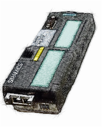
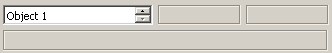

20.03.20; Mar.2020
Monitor 5
help
Aria Sinamics
Conexiuni, Interfete:

G120:
Localizati interfata Profinet
Este posibil sa aveti nevoie de un alt software pentru a gasi adresa Ehernet a modulului (Starter, StartDrive, TIA Portal, etc).
Rack: 0
Slot: oricare
S120:
Puteti utiliza interfata X127 (Ethernet Service Interface) sau orice interfata Profinet disponibila
Este posibil sa aveti nevoie de un alt software pentru a gasi adresa Ehernet a modulului (Starter, StartDrive, TIA Portal, etc).
Rack: 0
Slot: oricare
Numar Obiect / Object number:
Pentru actionarile mono-axa (precum Sinamics G120, G120D, G120C, G120X, etc.) numarul obiectului nu este relevant.
Unitatea de Control este montata pe modulul de forta (Power Module) si impreuna formeaza un Obiect de Actionare: un sistem cu capabilitatea de a controla motorul, salva parametrii, a primi comenzi, etc.

Sistemele de actionari cu arhitectura modulara, precum Sinamics S120, au o arhitectura complexa.
Diversele componente sunt conectate intre ele, prin intermediul barelor de Curent Continuu si prin intermediul interfetei de sistem Drive-Cliq, pentru a controla unul sau mai multe motoare.
In acest mod, motorul nu mai este controlat de un singur echipament hardware, ca in cazul sistemelor mono-drive ('Single Drive'), pentru a controla motorul sunt necesare mai multe componente conectate intre ele.
Exemplu:
in imaginea din stanga este reprezentat un sistem modular ce controleaza 3 motoare.
- primul modul (cel mic, din stanga) este Unitatea de Control (Control Unit)
- al 2-lea modul este Modulul de Linie (Line Module): un redresor ce transforma curentul alternativ de la retea in curent continuu.
- al 3-lea modul este un Modul Dublu de Motor (Double Motor Module): doua convertizoare ce moduleaza curentul continuu venit pe barele circuitului intermediar de la modulul redresor (Line Module) in curent alternativ pentru controlul motoarelor.
- al 4-lea modul este un Modul pentru un Motor (Single Motor Module): un convertizor ce moduleaza curentul continuu venit pe barele circuitului intermediar de la modulul redresor (Line Module) in curent alternativ pentru controlul motorului.

(1) In sistemele Sinamics S120, Unitatea de Control (Control Unit) este considerata un Obiect de Actionare (Drive Object).
In exemplul nostru va fi primul Obiect.
(2) Intr-un sistem modular este nevoie de un modul redresor. Unele redresoare, precum "Active Line Module" au parametri si sunt considerate Obiecte de Actionari in sistem.
In exemplul nostru modulul Active Line Module (redresorul) este al 2-lea Obiect.
(3) si (4) Un modul de motor dublu (Double Motor Module) are doua punti invertoare independente, fiecare capabila sa controleze tensiunea de curent alternativ pentru un motor. Fiecare invertor are proprii parametri si, impreuna cu motorul si electronica necesara pentru encoder (de exemplu un Sensor Module) formeaza cate un Obiect de Actionari.
In exemplul nostru, Obiectul (3) este format din primul invertor al Modulului Duble, primul motor si eventual electronica necesara pentru encoder.
Obiectul (4) este format din al doilea invertor al Modulului Dublu, al doilea motor si eventual electronica necesara pentru encoder.
(5) Obiectul de Actionari (5) este format din ultimul Modul de Motor, ultimul motor si eventual electronica necesara pentru encoder.

Selectie Obiect de Actionari
Selectati numarul Obiectului de Actionari.
Valoarea parametrului r975.1, Drive Object Identification, este afisata in linia de sub numarul Obiectului de Actionari.